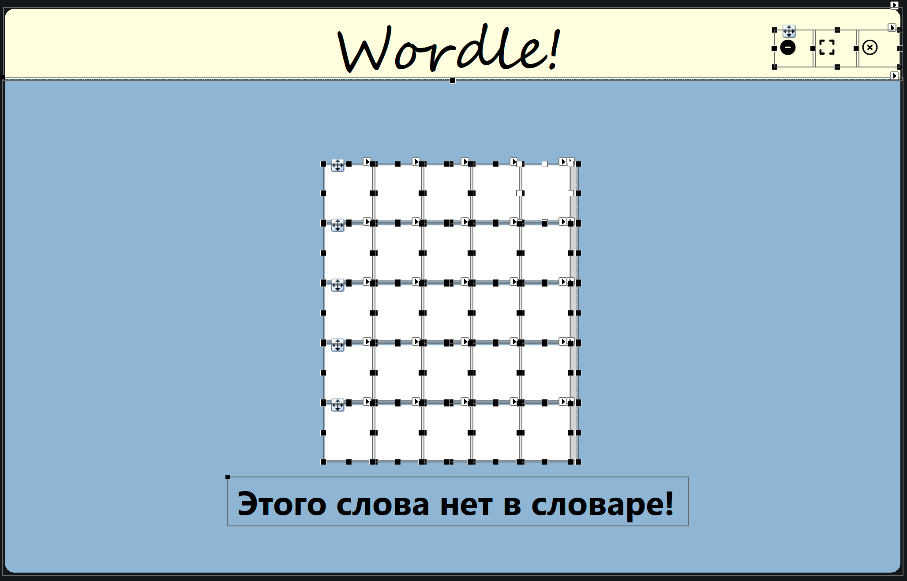

О приложении
Wordle — это увлекательная и минималистичная словесная игра, завоевавшая популярность благодаря своей простой механике. Приложение представляет собой пазл, в котором игроки должны угадать скрытое слово за ограниченное количество попыток. Каждая игра — это сочетание интеллектуального поиска, логического анализа и элемента азарта.
Основная концепция
В Wordle игрокам дается 6 попыток, чтобы разгадать скрытое слово из пяти букв. После каждой попытки приложение дает обратную связь:
-
Зеленый цвет буквы показывает, что она стоит на правильном месте.
-
Желтый цвет буквы указывает, что буква есть в слове, но находится в другом месте.
-
Серый цвет означает, что буквы нет в слове.
Такая простая, но гениальная механика делает игру одновременно доступной для новичков и увлекательной для тех, кто любит сложные головоломки.
Процесс разработки
1. Планирование приложения
Этот этап являлся самым важным, т.к. именно в процессе его выполнения происходило обозначение основных концепций игры, рождался фундамент, благодаря которому стало возможным выполнение последующих этапов. Именно в этот промежуток времени были согласованы назначение и цель проекта, спроектирован бэклог продукта.
Назначение: Данный проект предназначен для создания игры Wordle, которая позволяет пользователям угадать загаданное слово за ограниченное количество попыток. Игра использует интерактивный интерфейс, где игроки вводят слова и получают обратную связь по каждой попытке, что помогает им сужать круг возможных вариантов.
Цель: Разработать интерактивное приложение, в котором пользователи смогут угадывать слова, вводя свои предположения. Приложение должно предоставлять обратную связь о правильности ввода, обеспечивать удобный интерфейс
| № | Пункт | User Story |
|---|---|---|
| 1 | Игровой процесс | Как пользователь, я хочу, чтобы приложение позволяло мне вводить слова и получать обратную связь о правильности моих предположений, чтобы я мог угадывать загаданное слово. |
| 2 | Интерфейс | Как пользователь, я хочу, чтобы приложение включало в себя несколько видов шрифтов. Интерфейс был интуитивно понятен и эстетически привлекателен. |
| 3 | Возможность генерировать случайные слова | Как пользователь, я хочу, чтобы приложение могло генерировать случайные слова для игры или использовать заранее заданное слово, чтобы сделать игру более разнообразной. |
2. Дизайн проекта
На этом этапе дизайнер нашей команды, согласовывая детали с каждым её членом, создавал макет будущей программы. А именно, были определены: стилистика, цветовая гамма, используемые шрифты.
3. Кодирование
В этот промежуток времени команда приступила к реализации задуманного. Исходный код можно изучить на github (закрыто до сдачи лабораторной работы).
4. Тестирование
В ходе тестирования командой было обнаружено свыше 30 небольших и 3 серьезных "багов", которые были успешно исправлены.
5. Документация
Когда все этапы готовы команда приступила к документированию сделанного в удобном для чтения формате.
Авторы
Максим Киселев
Scrum-мастер. C# разработчик
Илья Скребец
C# разработчик
Станислав Лавшук
Frontend разработчик
Тимофей Вилюха
UX/UI дизайнер
Богрец Андрей
Гейм-дизайнер
Как установить?
Скачайте файл по кнопке ниже, запустите, наслаждайтесь игрой!